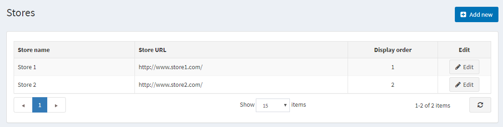
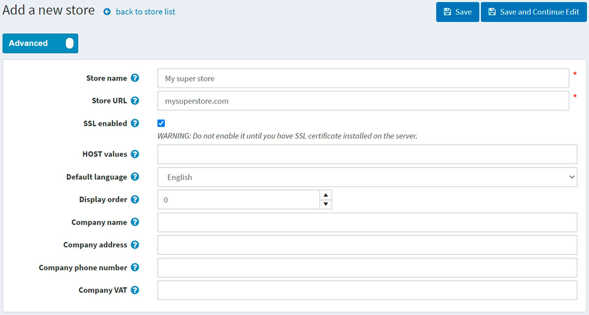
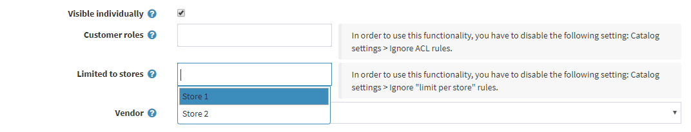
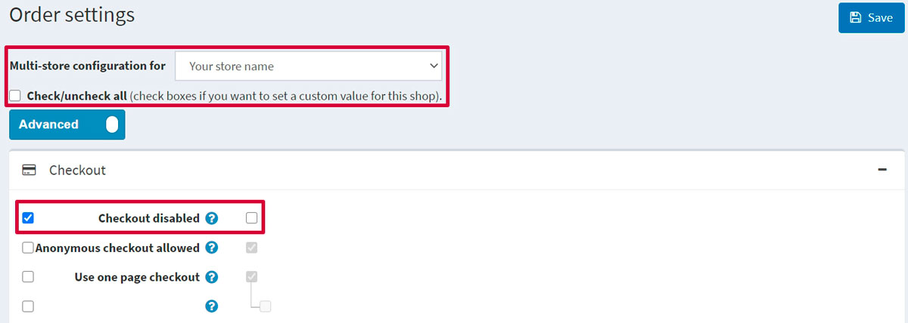

多重商店
nopCommerce 讓您可以使用單一 nopCommerce 安裝環境中的單一介面，執行超過一個以上的商店。
這使您能夠在不同的網域上架設多個前台商店，並從單一管理後台管理所有的後台作業。您可以在不同商店之間共用型錄資料、將同一個商品放置在一個以上的商店中，且您的顧客可以使用相同的憑證登入您所有的商店。
設定多商店 (multi-store)
1. 虛擬主機控制台部分
在以下範例中，我們將說明如何設定兩個範例商店：
www.store1.comwww.store2.com
上傳並安裝網站至
www.store1.com。這是唯一存放 nopCommerce 檔案與 DLL 的地方。Note
關於如何安裝 nopCommerce 的詳細資訊，請參閱下一章：安裝 nopCommerce。
在
www.store2.com的控制台中（指的是您的虛擬主機控制台，而非 nopCommerce 管理後台），確保所有對www.store2.com的請求皆已轉發（forwarded，非 redirect 重導向）至www.store1.com。請使用 CNAME 記錄來執行此步驟，這點非常關鍵。在
www.store1.com的控制台中，設定www.store2.com的網域別名 (domain alias)。此步驟對某些使用者來說可能較為複雜（若遇到問題，請請教您的系統管理員來執行此步驟）。完成上述步驟後，當您從瀏覽器存取
www.store2.com時，將會顯示www.store1.com的內容。下一步是在 nopCommerce 管理後台設定商店，這將在下方進行說明。完成後，您即可開始為兩間商店上傳內容。選用（範例）：此步驟可從下方的 Plesk 控制台執行，操作如下：
當
www.store2.com被重新導向至www.store1.com時，Plesk 的網頁伺服器會因為使用「名稱基礎虛擬主機」(Name-Based Virtual Hosting) 而不知道該如何顯示www.store2.com。因此，您必須為www.store2.com建立一個網域別名，操作說明如下：透過直接登入或從伺服器管理面板點選 Open in Control Panel 連結，登入
www.store1.com的網域面板。在 Websites & Domains 索引標籤中，選取頁籤底部附近的 Add New Domain Alias 連結。
輸入完整的別名，例如
store2.com。確保已選取 Web service 選項。
Mail 服務為選用項目。若您希望來自
www.store2.com的電子郵件也能以相同方式轉發，請選取此選項。確保 Synchronize DNS zone with the primary domain 選項為取消勾選狀態。
2. nopCommerce 管理後台部分
一旦安裝與技術設定完成，您即可從 nopCommerce 管理後台管理您的商店。前往 設定 → 商店。隨即會顯示「商店」視窗：

Note
預設情況下，系統僅會建立一個商店。
若要設定多個商店，請點擊 新增 並定義下列商店設定：

定義 商店名稱。
輸入您的 商店 URL。
如果您的商店有 SSL 安全保護，請勾選 啟用 SSL 核取方塊。SSL (Secure Sockets Layer) 是用於在伺服器與瀏覽器之間建立加密連結的標準安全性技術。此連結可確保伺服器與瀏覽器之間傳遞的所有資料保持隱私且完整。SSL 是全球數百萬個網站用來保護其與顧客之間線上交易的產業標準。
Important
請務必在伺服器安裝 SSL 憑證後，再勾選此選項。否則，您將無法存取您的網站，且必須手動編輯資料庫中的對應紀錄（[Store] 資料表）。
Tip
閱讀以下章節以了解更多關於 SSL 設定的資訊：如何安裝與設定 SSL 憑證。
主機值 (HOST values) 欄位是您商店可能使用的 HTTP_HOST 值清單（例如
store1.com、www.store1.com）。僅在您擁有「多商店」解決方案時，才需要填寫此欄位以識別當前商店。此欄位能區分不同 URL 的請求並判定當前商店。您也可以在 系統 → 系統資訊 中查看目前的 HTTP_HOST 值。在 預設語言 欄位中，選擇您商店的預設語言。您也可以選擇不選。若未選擇，系統將使用找到的第一個語言（顯示順序最優先者）。
定義此商店的 顯示順序。1 代表列表的最上方。
定義 公司名稱。
定義 公司地址。
設定您的 公司電話號碼。
在 公司 VAT 欄位中，輸入您公司的加值型營業稅號（適用於歐盟）。
透過點擊 設定 → 商店 頁面上的 新增 按鈕並填寫類似欄位，即可增加另一個商店。
現在，這兩個商店已使用單一的 nopCommerce 安裝進行設定：
Note
多商店解決方案（透過 HTTP_HOST 區分商店）對於位於同一網域下虛擬目錄的網站並不適用。
例如，您無法將一個商店設在 http://www.site.com/store1，而將第二個商店設在 http://www.site.com/store2，因為這兩個網站的 HTTP_HOST 值皆相同（www.site.com）。
為多商店設定實體
一旦設定並配置好商店，您就可以為每個商店定義您的實體。您可以透過填寫下列各項詳細資料頁面中的 Limited to stores（限制於商店）欄位來完成此操作：商品、類別、製造商、語言、貨幣、訊息範本、部落格、新聞、內容頁面。
向下捲動至 Limited to stores（限制於商店）欄位，並從下拉式選單中選擇現有商店的名稱，如下方 Edit product details（編輯商品詳細資料）畫面所示：

設定多商店的設定
也可以為不同的商店設定不同的 佈景主題。
此外，您可以針對每個商店覆寫任何設定值。例如，前往 設定 → 訂單設定，並查看 多商店設定目標為 下拉式清單，您可以在此選擇想要覆寫設定的商店：

當您選擇商店後，頁面將會重新整理，您便能為所選的商店定義任何欄位。接著只需點擊 儲存 即可儲存設定。